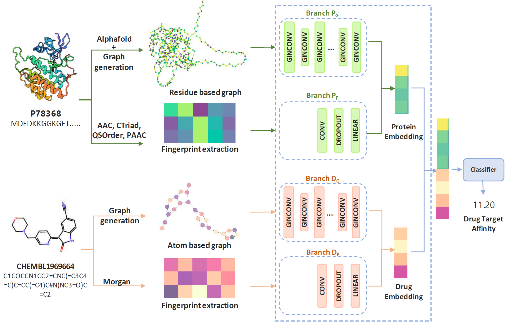
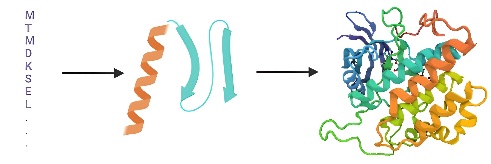
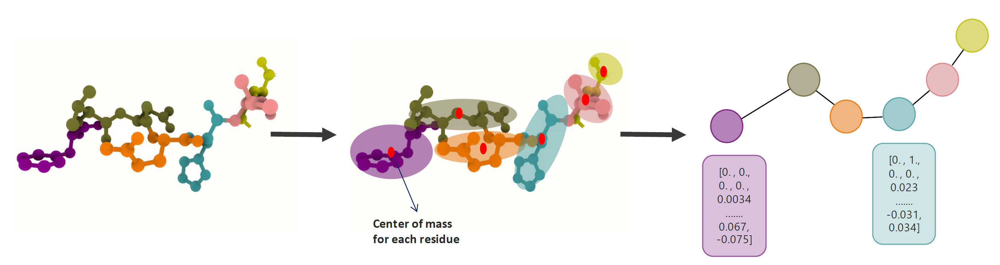
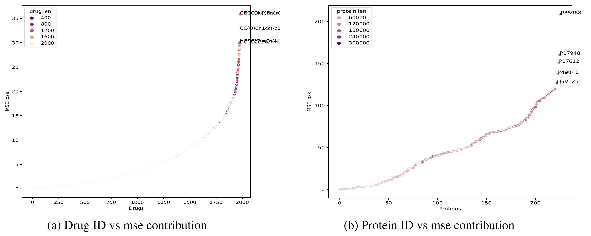
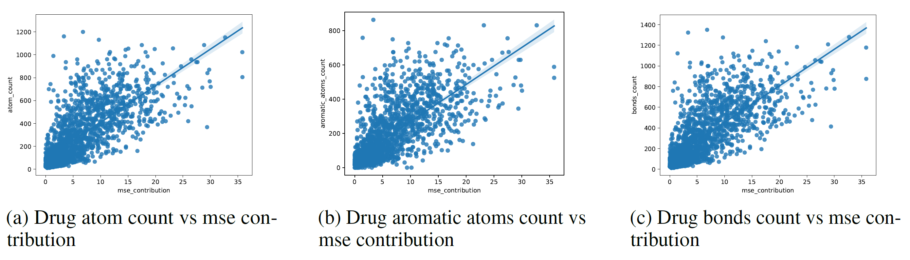

Accurate drug target affinity prediction can improve drug candidate selection, accelerate the drug discovery process, and reduce drug production costs. Previous work focused on traditional fingerprints or used features extracted based on the amino acid sequence in the protein, ignoring its 3D structure which affects its binding affinity. In this work, we propose GraphPrint: a framework for incorporating 3D protein structure features for drug target affinity prediction. We generate graph representations for protein 3D structures using amino acid residue location coordinates and combine them with drug graph representation and traditional features to jointly learn drug target affinity. Our model achieves a mean square error of 0.1378 and a concordance index of 0.8929 on the KIBA dataset and improves over using traditional protein features alone. Our ablation study shows that the 3D protein structure-based features provide information complementary to traditional features.

Fig. 1 — GraphPrint pipeline: AlphaFold structure → residue graph, fingerprint extraction, and the four-branch (PG, PF, DG, DF) architecture, followed by concatenation into a classifier.
Predicting drug–target affinity (DTA) is a core step in drug discovery — it lets researchers rank candidate compounds before committing to expensive wet-lab validation. Almost all deep learning approaches to DTA, from DeepDTA to GraphDTA, represent a protein purely as its 1D amino acid sequence, either via convolutional embeddings or, more recently, a sequence-derived graph. This throws away information: proteins fold into secondary, tertiary, and sometimes quaternary 3D structures, and it is this 3D shape — not the raw sequence — that determines a protein's binding and docking sites.
With AlphaFold making accurate 3D structure prediction available at scale, GraphPrint asks a simple question: does giving a DTA model direct access to a protein's 3D structure, on top of its sequence-derived fingerprints, improve affinity prediction? We answer this by building a residue-level 3D graph from AlphaFold-predicted structures — each amino acid becomes a node located at its residue's center of mass — and fusing it with traditional fingerprints and a drug's own 3D-aware molecular graph inside a multi-branch graph neural network.

Protein structure at several levels: primary (amino acid sequence), secondary (helix/sheet), and tertiary/quaternary folding into the full 3D structure that GraphPrint's protein graph branch captures.
GraphPrint uses a four-branch multi-head architecture that learns protein and drug embeddings from both structure and fingerprint representations, then fuses them for a final regression head:
The four branch embeddings are concatenated and passed through a classifier MLP to predict the final KIBA affinity score. Bottleneck layers throughout the architecture encourage efficient, compact embeddings and reduce parameter count.

Protein graph representation: each residue's center of mass becomes a node, with amino acid property features attached.
GraphPrint was evaluated on a curated version of the KIBA dataset (2,111 drugs, 229 proteins, filtered to pairs with ≥10 interactions), with 3D protein structures generated via AlphaFold. The full four-branch model achieved competitive performance against prior state-of-the-art DTA architectures.
Mean Squared Error
0.1378
Concordance Index
0.8929
Spearman corr.
0.8852
Pearson corr.
0.8920
| Model | RMSE | MSE | CI | Spearman | Pearson |
|---|---|---|---|---|---|
| DeepDTA | — | 0.194 | 0.863 | — | — |
| GraphDTA | — | 0.139 | 0.891 | — | — |
| iEdgeDTA | — | 0.139 | 0.890 | — | — |
| BiComp-DTA | — | 0.167 | 0.891 | — | — |
| GraphPrint (ours) | 0.3713 | 0.1378 | 0.8929 | 0.8852 | 0.8920 |
An ablation study removing one branch at a time confirms that the 3D protein-structure branch (PG) is not redundant: removing it drops CI from 0.8929 to 0.8911 and increases MSE, supporting the hypothesis that 3D structure carries information complementary to traditional hand-crafted fingerprints. Removing the fingerprint branches (DF, PF) causes a larger performance drop, indicating fingerprints and structure work best together rather than as substitutes for one another.

A small number of drugs and proteins are responsible for the majority of MSE error — the loss curve rises sharply only for the tail of hardest cases.

MSE contribution scales roughly linearly with a drug's atom count, aromatic atom count, and bond count — larger, more complex molecules are harder to predict accurately.
Generating 3D structures with AlphaFold is computationally expensive, so this study evaluates GraphPrint only on KIBA; broader evaluation across multiple DTA datasets is a natural next step. The work focuses on integrating 3D structural information rather than optimizing the graph architecture itself — more recent attention-based graph architectures could offer further gains. Promising future directions include an explainability layer that highlights which amino acid regions drive drug interactions, and a systematic study of which protein structural motifs are associated with the largest prediction errors.
@misc{singh2024graphprint,
title = {{GraphPrint: Extracting Features from 3D Protein Structure for
Drug Target Affinity Prediction}},
author = {Singh, Amritpal},
year = {2024},
eprint = {2407.10452},
archivePrefix = {arXiv},
primaryClass = {cs.LG},
note = {NeurIPS 2023 Workshop on New Frontiers of AI for Drug Discovery
and Development (AI4D3 2023)}
}